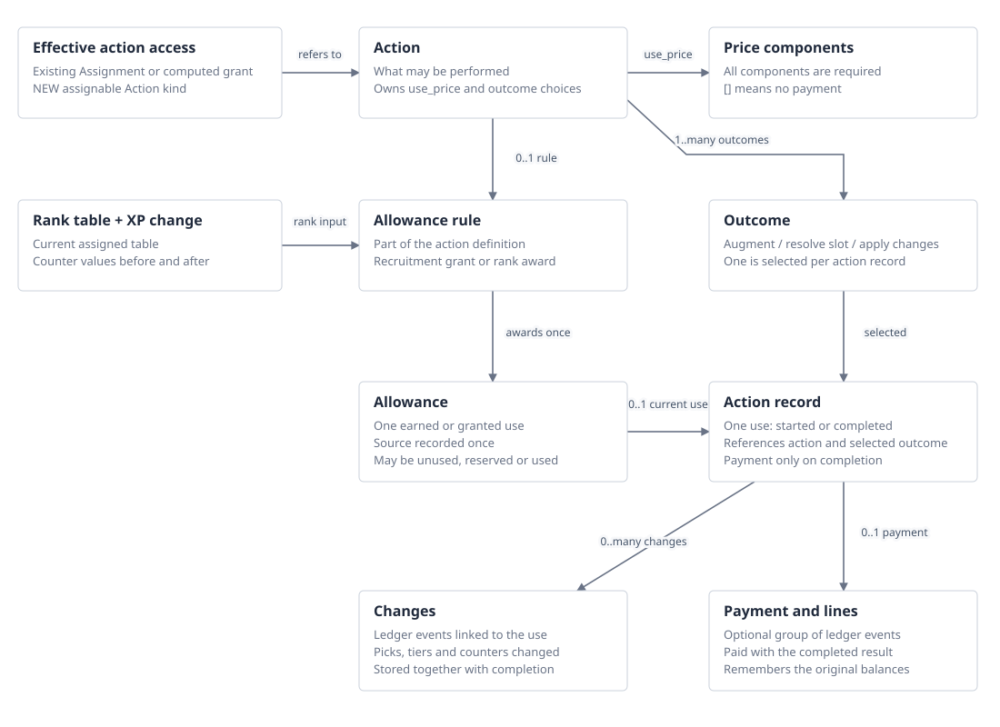
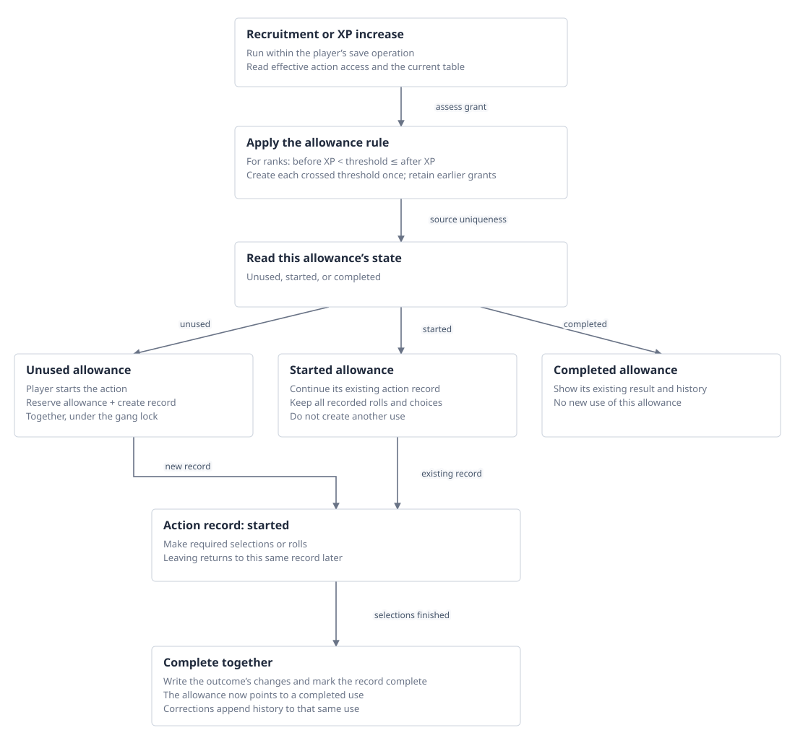
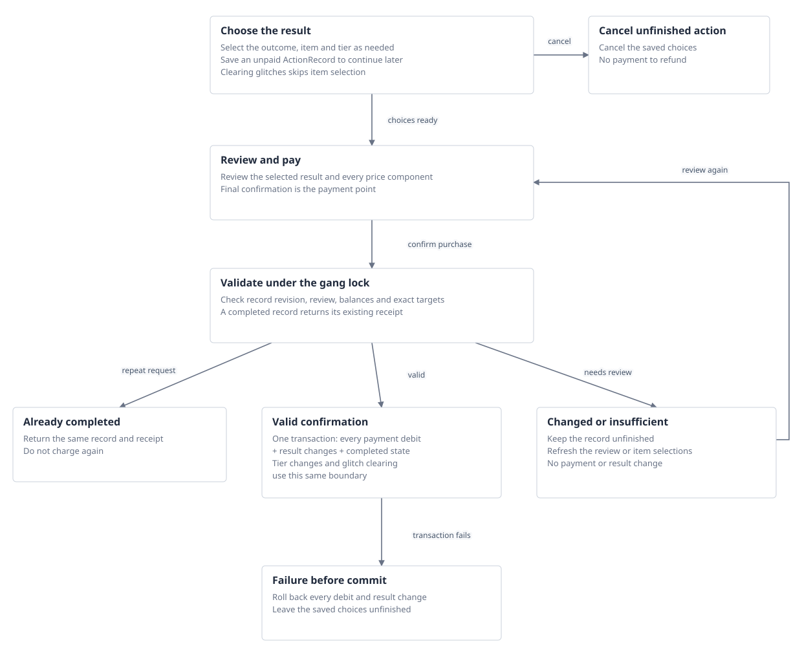

{kind=link}
{kind=link}
{kind=link}
YES
Action
A fighter can possess and lose access to it through existing built-ins, grants and removals. A use is a separate ActionRecord.
n26 · accepted design
Grant access with existing assignments and modifiers. Record each paid or earned use separately.
This page preserves the accepted design sketch. The application implements the flows; NEW, EXTEND and REUSE labels record the work identified during design.
Flow prototype · Full YAML · Markdown · Implementation guide
Use Action for assignable content, ActionRecord for one use, and Activity for the surrounding gang task. Rename the existing core.Action to core.Activity when implementing this design.
| Name | In conversation | Why use it? | Trade-off |
|---|---|---|---|
| Action | Assign Suit Evolution to this fighter. Start a Suit Evolution action. | Names something the fighter can do. Fits both the shop and the rulebook examples. | Can mean the available action or a particular use. Use ActionRecord for the latter. Renaming the existing gang model to Activity would remove the code-name collision. |
| Capability | Grant the Suit Evolution capability. Start an action using it. | Makes the distinction between having access and using it explicit. Avoids the existing Action model name. | Broad enough to suggest passive benefits as well as actions. Requires another noun when the player starts a use. |
| Activity | Make Suit Evolution available as an activity. Start the activity. | Works for something with several steps and avoids the existing model name. | Use this name for the gang task, such as founding or a Trading Post visit. Action more specifically describes something available for a fighter to perform. |
| Procedure | Assign the Suit Evolution procedure. Follow the procedure. | Makes the sequence of steps obvious. | Suggests that content defines a workflow. Here, the supported operation supplies the forms and steps. |
library.Action: NEW assignable content: what can be done, its use price, outcomes and optional allowance rule.Assignment(action=...): EXTEND the existing assignment registry with a typed reference to library.Action. This stores access; an effective grant can also supply access.core.ActionRecord: NEW player record: one started or completed use, with its selections, payment and changes.core.Activity (currently core.Action): PROPOSED RENAME of the existing gang task: founding or a Trading Post visit. It has open/closed state, groups purchases and tracks its Trade Point budget.The proposed rename gives each concept its own name: library.Action, core.ActionRecord and core.Activity. Activity keeps the existing gang task’s data and behaviour. Grouping fighter ActionRecords under an Activity would be a separate relationship to design; it is not required by this naming choice.
ActionDefinition was the earlier name for the proposed assignable content model. The current application still calls the gang task core.Action; Activity is the proposed replacement name.
An allowance rule is content. An allowance is one earned use. An action record is one attempt to perform the action. Paid actions have no allowance.

Arrows show references and grant relationships. An allowance has at most one started or completed record; cancelled pre-roll attempts remain in history. Open diagram · Mermaid source

Saving an XP increase from 48 to 61 records separate allowances for 49 and 61. Starting the 49 allowance reserves only that one. Continuing it reuses its recorded roll; completion leaves the 61 allowance available.
A fighter with a different assigned rank table uses that table’s thresholds. Changing the table itself does nothing. The next player-saved XP increase uses the replacement table to find newly crossed thresholds.
Agreed: record newly crossed ranks during the player’s XP save. Changing the rank table itself needs no special handling or extra baseline.
status: AGREED and used by the action definitions and diagrams
recommendation: >-
Create earned allowances when XP increases. Changing the assigned rank table itself needs no handler,
history period or replacement baseline.
crossing_test: before < threshold <= after
reuse: >-
Operation.tally already knows before and after. Read the current effective RankTable and retain the
existing unique allowance source key.
extension: >-
Run the rank allowance rule during an XP increase and save new allowances in the same transaction. The
player still chooses and applies the advancement during the post-cycle flow.
table_change_example:
xp_when_table_changes: 55
replacement_thresholds:
- 50
- 60
- 70
on_table_change: >-
No grant calculation. Unused allowances remain available; started and completed allowances keep their
records.
next_xp_increase:
before: 55
after: 60
new_allowance_thresholds:
- 60
initial_counter_value: >-
Opening a counter with starting XP does not cross earned thresholds. Existing built-in counters open
directly at member.amount.
existing_fighters: >-
One-off initial setup assumes all eligible past advancements are unused; no reconstruction or owner
reconciliation of past use.
literal_do_nothing_with_original_scan:
behaviour: >-
At the next post-cycle assessment, scan the currently assigned table and create each eligible threshold
that has no allowance record.
trade_off: >-
A replacement threshold of 50 can grant another allowance at 55 XP even when an old-table allowance
at 49 already exists. This does not preserve the agreed future-only behaviour.
status: Earlier alternative, not selected
scope: >-
Rank grants run inside the user-triggered XP-change operation. No automatic background processing and
no table-change operation. Initial existing-fighter setup is separate and assumes no previous advancements
taken.
allowance_rule:
kind: rank
event: counter_increased
counter: xp
rank_table_from: acting_fighter_effective_rank_tableAgreed: finish the choices before paying. Unfinished actions can be resumed or cancelled. Final confirmation writes the payment and result together.

YES
A fighter can possess and lose access to it through existing built-ins, grants and removals. A use is a separate ActionRecord.
YES
A fighter has an effective progression schedule which may differ by profile and change through modifiers.
NO FOR NOW
A result template belongs to action content. Performing it records changes; it does not make the fighter hold the outcome definition.
NO FOR NOW
A policy of an action. Different rank schedules are already represented by assigned RankTables.
NO
Terms of a transaction, not held game content.
NO
Player records and historical evidence. Archiving a source assignment must not erase or replay them.
Generalise transaction values and payment execution; leave collection discovery and equipment price calculation behind adapters.
name: Illustrative action, not a rulebook price
use_price:
- resource: credits
payer: gang
amount: 50
- resource: counter
payer: fighter
counter: kill_count
amount: 4
before:
gang_credits: 80
fighter_kill_count: 6
after:
gang_credits: 30
fighter_kill_count: 2
if_either_is_insufficient: no debit or result change; leave the action unfinished for revised review or
cancellationREUSE UNCHANGED
TargetsMiniature(reach=bearer/every_model), existing condition models, as_selector()
The same scopes offer actions to the bearer or every fighter in the gang.
n26/library/models/modifier.py:153
REUSE UNCHANGED
IsProfile, HasSubtypes, CounterAtLeast and n26.core.select Has/Exactly/All/Any
Any narrowing uses these persisted condition rows and their existing selector compilation. No has_rule/keeps_counter configuration language.
n26/library/models/modifier.py:342
REUSE MIXIN ON NEW MODEL
UsableBy and usable_by_selector()
Action inherits the existing three lists, default-open semantics and notes.
n26/library/models/assignable.py:283
REUSE PATTERN; EXTEND PIPELINE
Assignment, built-ins, AddsAssignable/RemovesAssignable and provenance
Register Action and RankTable as assignable/grantable kinds; extend access readers. No OffersAction effect or new eligibility grammar.
n26/core/access.py:1
REUSE UNCHANGED
Existing category placements, skill grid, sections and skill UsableBy
Read the fighter’s existing skill access. Any-skill advancement deliberately includes all sets, with existing usability notes. The guided random procedure rerolls duplicates/unusable results as the rules specify.
n26/core/access.py:178
NEW
AllowanceRule, ActionAllowance, RankTable
Record each crossed threshold once when the player saves an XP increase, using the current assigned table. Keep earned records when access changes.
NEW MODELS; REUSE TRANSACTION BOUNDARY
Action, Outcome, ActionRecord; operation(gang)
Distinct action lifecycle with existing gang locking and atomic writes.
n26/core/operations.py:2812
EXTEND EXISTING LEDGER
LedgerEvent action link, payment kinds, structured counter movements and reversal links
Group payment-line events; extend counter movement fields and receipt/refund readers. Existing standalone credit summation already applies. Preserve acquisition ledger folds during future reuse.
n26/core/models/ledger.py:143
EXTEND EXISTING SLOTS/PICKLIST MEMBERS
Ladder mode plus numeric member levels
Keep existing item slots and pickable effects; add enough structure to calculate the next tier.
n26/library/models/slots.py:450
EXTEND EXISTING OFFER; NEW SELECTION RECORD
OffersChoice select/random mode, SkillSelection, recorded skill-table rolls
Reuse skill selection/access and add the missing random mode and action completion link.
n26/library/models/modifier.py:1243
REUSE + EXPLICIT EXTENSION
OpChangesCounter configuration and Operation.remove; new action invocation and RemovePicks mutation
Apply both atomically for Clear glitches. The counter assignment remains; held glitch picks are removed.
n26/library/models/modifier.py:1689
NEW ASSIGNABLE KIND
RankTable plus existing Assignment, built-in, grant and removal machinery
Follows existing assignable AssetTable precedent. Add explicit registry fields and an effective-table reader.
n26/library/models/modifier.py:90
TargetsMiniature and AddsAssignable already exist. Registering Action and RankTable as supported kinds, and reading their effective access, is the extension. No OffersAction effect is proposed.
attached_to:
kind: Rule
ref: spyrer_rule
scope:
kind: TargetsMiniature
reach: bearer
conditions: []
effect:
kind: AddsAssignable
action: suit_evolutionattached_to:
kind: Rule
ref: spyrer_rule
scope:
kind: TargetsMiniature
reach: bearer
conditions: []
effect:
kind: AddsAssignable
action: suit_maintenanceattached_to:
kind: Profile
ref: spyre_hunt_master
scope:
kind: TargetsMiniature
reach: bearer
conditions: []
effect:
kind: AddsAssignable
action: hunt_master_augmentationattached_to:
kind: Rule
ref: model_progression_rule
scope:
kind: TargetsMiniature
reach: every_model
conditions: []
effect:
kind: AddsAssignable
action: model_advancementattached_to:
kind: Rule
ref: model_progression_rule
scope:
kind: TargetsMiniature
reach: every_model
conditions: []
effect:
kind: AddsAssignable
rank_table: model_ranksuse_price is the list paid to perform the action. The inherited price field is the credit price of acquiring the capability and remains zero in these examples.
id: suit_evolution
name: Suit Evolution
subject: fighter
timing: post_cycle
outcomes:
- augment_carried_item
- clear_glitches
usable_by_profile_types: []
usable_by_subtypes: []
usable_by_profiles: []
allowance_rule:
use_price:
- resource: counter
payer: fighter
counter: kill_count
amount: 4
price: 0id: suit_maintenance
name: Suit Maintenance
subject: fighter
timing: post_cycle
outcomes:
- clear_glitches
usable_by_profile_types: []
usable_by_subtypes: []
usable_by_profiles: []
allowance_rule:
use_price:
- resource: credits
payer: gang
amount: 100
price: 0id: hunt_master_augmentation
name: Recruitment augmentation
subject: fighter
timing: recruitment
outcomes:
- augment_carried_item
usable_by_profile_types: []
usable_by_subtypes: []
usable_by_profiles: []
allowance_rule:
kind: recruitment
event: recruitment_completed
quantity: 1
use_price: []
price: 0id: model_advancement
name: Advancement
subject: fighter
timing: post_cycle
outcomes:
- resolve_advancement
usable_by_profile_types: []
usable_by_subtypes: []
usable_by_profiles: []
allowance_rule:
kind: rank
event: counter_increased
counter: xp
rank_table_from: acting_fighter_effective_rank_table
use_price: []
price: 0An assignable capability: a fighter with effective access to this action may start a use. Its definition names the price of a use, possible outcomes and any earned allowance required.
PROPOSED NEW ASSIGNABLE KIND: library.Action(Content, Assignable, UsableBy). Extend existing assignment, built-in, grant and removal registries.
id: content ID
name: player-facing name
subject: fighter (initial supported subject)
timing: recruitment | post_cycle; describes where it is offered, not a campaign phase enforcement engine
outcomes: ordered, non-empty references to Outcome; exactly one is selected per use
usable_by_profile_types: 'EXISTING UsableBy M2M: ProfileType references; combined with the other two lists.'
usable_by_subtypes: 'EXISTING UsableBy M2M: Subtype references; combined with the other two lists.'
usable_by_profiles: 'EXISTING UsableBy M2M: Profile references; combined with the other two lists.'
allowance_rule: >-
NEW optional RecruitmentAllowanceRule or RankAllowanceRule. Null means no earned allowance is required;
each paid use still records its payment.
use_price: >-
ordered list of PriceComponent, charged at final confirmation after all selections; [] means a use has
no payment
price: >-
EXISTING inherited credit price of acquiring the action capability; fixed at 0 for these actions. Distinct
from use_price.A named result an action can produce. Several actions may refer to the same outcome.
NEW library content with one typed operation configuration; action membership supplies ordering. It is not assignable.
id: content ID
name: player-facing name
operation: 'AugmentCarriedItem | ResolveAdvancement | ApplyChanges(changes: list[CounterChange | RemovePicks])'The full price of one use: every component is required. The list means AND, not alternative ways of paying.
NEW use_price component rows attached to Action; normalised to a shared Price value before confirmation. Future collection prices can adapt to this value.
components: ordered list[PriceComponent]
combination: all components requiredOne earned or granted use of an action, such as the advancement at 49 XP. This is internal bookkeeping, not a player-facing token.
New player-data model ActionAllowance.
id: record ID
action: library.Action reference
fighter: Miniature reference
recruitment: membership Assignment reference
source:
kind: recruitment | rank
threshold: integer for rank; null for recruitment
rank_table: RankTable content reference and acquisition provenance for rank grants; null for recruitment
granted_event: LedgerEvent referenceOne use of an action, including an unfinished use the player can continue.
New player-data model core.ActionRecord. The existing gang core.Action would be renamed core.Activity.
id: record ID
request_key: >-
unique use ID scoped to the gang; repeated starts or final confirmations address the same record. Completed
records return their receipt without another payment.
action: library.Action reference
fighter: Miniature reference
gang: Gang reference at start
allowance: Allowance reference or null
outcome: Outcome reference
state: started | completed | cancelled
terms: >-
accepted snapshot of action/outcome names, use_price components, operation configuration and exact content
references; finalised with completion. Unpaid review terms can be refreshed. Recorded advancement rolls
retain their original rule context.
started_event: LedgerEvent reference
completed_event: LedgerEvent reference or null
selection:
AugmentationSelection:
item_assignment: Assignment or null until selected
slot_assignment: Assignment or null
previous_pick: Assignment or null for level zero
new_pick: Assignment or null until committed
intended_pick: Pickable reference selected before checkout; new_pick remains null until completion
AdvancementSelection:
slot_assignment: Assignment reference
roll_event: LedgerEvent reference
intended_pick: Pickable reference or null
pick_assignment: Assignment reference or null until committed
skill_choice: SkillSelection or null
AppliedChangesResult:
change_events: ordered LedgerEvent references for each applied mutation
revision: integer for detecting stale correction forms
payment_id: payment group UUID or null
source: >-
source assignment and modifier provenance; may be a computed action grant rather than a direct action
assignment
review: >-
optional snapshot for confirmation: proposed price components, selected outcome and item/tier, exact
balance references and expected before-state. Revalidate under the gang lock; changed figures or targets
require another review.One accepted payment, consisting of all its debit lines. It records actual movements, not today’s price definition.
EXTEND LedgerEvent with payment_id and action_record links. Payment is the grouped view of its events, not a parallel financial ledger or separate mutable balance.
id: payment UUID shared by all payment-line events
action_record: ActionRecord reference for these flows
lines: non-empty list of PaymentLine views over ledger events
actor: existing actor
created: existing event timestamps
refunded_by: separate reversal payment group, if explicitly refundedSomething an action did: a counter changed, an item tier changed, a pick was recorded or a glitch was removed.
Existing ledger events, extended with action_record and structured before/after references where required. No separate general-purpose Change table.
action_record: ActionRecord reference on each related event
subject: exact affected assignment or fighter
kind: existing event kind, or a specifically added kind where needed
before_after: 'typed fields for the operation: counter numbers or previous/new pick references'
actor_created_batch: existing ledger metadataThe ordered augmentation tiers for one item. These are cumulative states: selecting a tier replaces the previous tier.
Existing Slot + Picklist + Pickable, extended with explicit ladder mode and unique numeric levels on its members.
slot: existing item-hosted Slot, max_picks 1
mode: tier_ladder
members: ordered pairs of level and Pickable reference; 1..N
no_pick_level: '0'An assignable XP progression schedule. Different fighters can hold different effective rank tables.
PROPOSED NEW ASSIGNABLE KIND: RankTable(Content, Assignable). Extend assignments, built-ins and AddsAssignable/RemovesAssignable like existing AssetTable.
id: content ID
counter: XP Counter reference
thresholds: ordered unique positive integers
scope: used by the fighter who effectively holds it; no fixed RankTable FK on the advancement action
price: EXISTING inherited acquisition price, fixed at 0 for these tablesThe skill choice required by one advancement result, including a chosen skill set and any random rolls.
Proposed typed child record of ActionRecord. It uses existing Skill and category/section content.
action_record: ActionRecord reference
mode: select | random
access: primary | secondary | any, copied from the selected advancement result
skill_set: Category reference or null until selected
roll_events: ordered LedgerEvent references; every random attempt is retained
selected_skill: Skill reference or null
skill_assignment: Assignment reference or null until committedA computed listing of an action for a fighter, including the content that offered it.
EXTENSION of existing assignment/effects/access readers to recognise Action. No new stored access model and no new effect kind.
action: library.Action reference
source: existing modifier carrier/provenance
usability: existing UsableBy result and notesWhen to record one earned or granted use of an already offered action.
NEW typed content configuration owned by the action. This is bookkeeping for grants, not a replacement for availability selectors.
RecruitmentAllowanceRule:
event: recruitment_completed
quantity: 1
RankAllowanceRule:
event: counter_increased
counter: existing Counter reference
rank_table_from: exactly one effective RankTable held by this fighter for the configured counterOne required resource and amount in a price.
NEW ActionPriceComponent content rows; reusable typed value for a future payment operation.
id: stable content component ID
resource: credits | counter; trade_points via future purchase adapter
payer: gang | fighter
counter: Counter reference for counter resource only
amount: positive integer for action use prices
position: display orderOne actual debit from one identified balance.
EXTEND LedgerEvent; a typed view over the event, not another table.
payment_id: group UUID
component_key: normalised resource/source identity, unique within a payment
balance: gang credits OR exact counter Assignment; future Trade Points includes original action and spent_by
amount: derived from signed event delta
before_after: structured counter values; optional credit receipt snapshots
action_record: provenance linkA stored mutation of a specific counter on a specific subject, such as setting Glitch Count to zero.
REUSE existing OpChangesCounter configuration (counter, mode, amount); EXTEND execution so an action can invoke it without creating a dummy carrier assignment.
subject: acting_fighter
counter: Counter reference
mode: set | add | subtract
amount: integer; zero for clearRemove all stored picks of a specified slot type held by the subject, including effects that depend on those picks.
NEW typed action mutation; REUSE Assignment filtering, archive/cause-chain removal and rating recomputation.
subject: acting_fighter
slot_type: SlotType reference
selection: all live Pickable assignments of that slot type held by the fighterClear glitches now composes two named mutations. CounterChange reuses the current set/add/subtract configuration; RemovePicks is a new typed mutation using existing assignment removal.
id: augment_carried_item
name: Hunting Rig Augmentation
operation:
kind: augment_carried_item
target:
holder: acting_fighter
kinds:
- weapon
- wargear
location: carried
slot:
slot_type: augmentation
mode: tier_ladder
quantity: 1
characteristic_maxima: model_characteristic_maxima
change:
from: current_level
by: 1
if_characteristic_maximum_exceeded: try_one_additional_level
if_no_valid_target: do_not_start
completion: replace_selected_item_tier
rating: from_resulting_content; no action surcharge
correction: replace_item_and_level_with_validated_atomic_reversalid: resolve_advancement
name: Advancement
operation:
kind: resolve_advancement
target: acting_fighter
slot: model_advancement
instances: one_slot_assignment_per_action_record
table: model_advancement_table
roll:
dice: 2d6
selection: threshold_at_or_below_roll
record_before_choice: true
characteristic_maxima: model_characteristic_maxima
if_no_result_can_be_gained: allow_any_result_from_table
completion: advancement_pick_and_any_required_skill_choice_recorded
rating: selected_advancement_pick.rating_contribution
skill_rating: 0 additional for the skill acquired through this advancementid: clear_glitches
name: Clear glitches
operation:
kind: apply_changes
changes:
- kind: counter_change
subject: acting_fighter
counter: glitch_count
mode: set
amount: 0
- kind: remove_picks
subject: acting_fighter
slot_type: spyrer_glitch
commit: all_changes_together
rating: recompute_from_remaining_assignmentskind: RankTable
counter: xp
thresholds:
- 4
- 7
- 10
- 13
- 19
- 25
- 31
- 37
- 49
- 61
- 73
- 85
- 97
- 109
- 121
- 133
- 157
- 181
- 205
- 229
assignable: truekind: Slot
slot_type: advancement
picklist: model_advancement_table
min_picks: 1
max_picks: 1kind: Picklist
slot_type: advancement
dice: 2d6
roll_selects: threshold
members:
- id: advance_leadership
roll_minimum: 2
rating_contribution: 5
effect:
kind: improve_characteristic
characteristic: leadership
steps: 1
- id: advance_intelligence
roll_minimum: 2
rating_contribution: 5
effect:
kind: improve_characteristic
characteristic: intelligence
steps: 1
- id: random_primary_skill
roll_minimum: 2
rating_contribution: 5
effect:
kind: offers_skill
selection: random
from: primary
relative_to: acting_fighter
quantity: 1
duplicate_policy: new_skill
type_restrictions: must_be_usable_by_fighter
skill_set_selection: player_selects_an_eligible_set
random_roll:
dice: d6
mapping: selected_skill_set_table
unusable_or_already_held: record_roll_then_reroll
if_no_usable_skill: select_another_eligible_set
- id: advance_cool
roll_minimum: 3
rating_contribution: 5
effect:
kind: improve_characteristic
characteristic: cool
steps: 1
- id: advance_willpower
roll_minimum: 3
rating_contribution: 5
effect:
kind: improve_characteristic
characteristic: willpower
steps: 1
- id: select_primary_skill
roll_minimum: 5
rating_contribution: 10
effect:
kind: offers_skill
selection: select
from: primary
relative_to: acting_fighter
quantity: 1
duplicate_policy: new_skill
type_restrictions: must_be_usable_by_fighter
skill_set_selection: player_selects_an_eligible_set
random_roll:
- id: random_secondary_skill
roll_minimum: 5
rating_contribution: 10
effect:
kind: offers_skill
selection: random
from: secondary
relative_to: acting_fighter
quantity: 1
duplicate_policy: new_skill
type_restrictions: must_be_usable_by_fighter
skill_set_selection: player_selects_an_eligible_set
random_roll:
dice: d6
mapping: selected_skill_set_table
unusable_or_already_held: record_roll_then_reroll
if_no_usable_skill: select_another_eligible_set
- id: advance_initiative
roll_minimum: 6
rating_contribution: 10
effect:
kind: improve_characteristic
characteristic: initiative
steps: 1
- id: advance_movement
roll_minimum: 6
rating_contribution: 10
effect:
kind: improve_characteristic
characteristic: movement
steps: 1
- id: select_secondary_skill
roll_minimum: 7
rating_contribution: 15
effect:
kind: offers_skill
selection: select
from: secondary
relative_to: acting_fighter
quantity: 1
duplicate_policy: new_skill
type_restrictions: must_be_usable_by_fighter
skill_set_selection: player_selects_an_eligible_set
random_roll:
- id: advance_weapon_skill
roll_minimum: 9
rating_contribution: 15
effect:
kind: improve_characteristic
characteristic: weapon_skill
steps: 1
- id: advance_ballistic_skill
roll_minimum: 9
rating_contribution: 15
effect:
kind: improve_characteristic
characteristic: ballistic_skill
steps: 1
- id: advance_strength
roll_minimum: 10
rating_contribution: 20
effect:
kind: improve_characteristic
characteristic: strength
steps: 1
- id: advance_toughness
roll_minimum: 10
rating_contribution: 20
effect:
kind: improve_characteristic
characteristic: toughness
steps: 1
- id: advance_wounds
roll_minimum: 11
rating_contribution: 20
effect:
kind: improve_characteristic
characteristic: wounds
steps: 1
- id: advance_attacks
roll_minimum: 11
rating_contribution: 20
effect:
kind: improve_characteristic
characteristic: attacks
steps: 1
- id: advance_save
roll_minimum: 11
rating_contribution: 20
effect:
kind: improve_characteristic
characteristic: save
steps: 1
- id: select_any_skill
roll_minimum: 12
rating_contribution: 30
effect:
kind: offers_skill
selection: select
from: any
relative_to: acting_fighter
quantity: 1
duplicate_policy: new_skill
type_restrictions: must_be_usable_by_fighter
skill_set_selection: player_selects_an_eligible_set
random_roll:movement: 12
weapon_skill: 2+
ballistic_skill: 2+
strength: 10
toughness: 10
wounds: 10
initiative: 10
attacks: 10
save: 3+
leadership: 10
cool: 10
willpower: 10
intelligence: 10kind: TierLadder
slot_type: augmentation
host_item: paired_bolt_launchers
max_picks: 1
members:
- level: 1
pickable: paired_bolt_launchers_tier_1
- level: 2
pickable: paired_bolt_launchers_tier_2
- level: 3
pickable: paired_bolt_launchers_tier_3kind: TierLadder
slot_type: augmentation
host_item: orrus_hunting_rig
max_picks: 1
members:
- level: 1
pickable: orrus_rig_tier_1
- level: 2
pickable: orrus_rig_tier_2agility:
dice: d6
faces:
'1': Catfall
'2': Clamber
'3': Dodge
'4': Mighty Leap
'5': Spring Up
'6': Sprint
brawn:
dice: d6
faces:
'1': Bull Charge
'2': Bulging Biceps
'3': Fearsome
'4': Iron Jaw
'5': Nerves of Steel
'6': Unstoppable
combat:
dice: d6
faces:
'1': Berserker
'2': Combat Master
'3': Headbutt
'4': Heavy Blows
'5': Rain of Blows
'6': Two-weapon Fighter
cunning:
dice: d6
faces:
'1': Backstab
'2': Counter-attack
'3': Cut-throat
'4': Infiltrate
'5': Lie Low
'6': Overwatch
savant:
dice: d6
faces:
'1': Connected
'2': Fast Reload
'3': Iron Will
'4': Medicate
'5': Mentor
'6': Munitioneer
shooting:
dice: d6
faces:
'1': Fast Shot
'2': Gunfighter
'3': Hip-shooting
'4': Marksman
'5': Precision Shot
'6': Sharpshooter--- >-
Symbolic references above stand for existing or proposed library rows, not string matching in production.
Every augmentable weapon and rig supplies its own ladder; the two examples demonstrate different lengths.
Skill Primary/Secondary membership is evaluated for this fighter using existing categories. Existing
tier effects stay on their Pickables.Selected fields illustrate successive states and separate fighters. Common metadata is defined above.
id: evolution_1
action: suit_evolution
fighter: vaelen
gang: ash_hunters
request_key: confirm_evolution_1
allowance:
outcome: augment_carried_item
state: started
payment:
selection:
item_assignment:
slot_assignment:
previous_pick:
new_pick:
next: Choose one carried item and tier, then review. Leaving saves these unpaid choices.id: evolution_1
state: started
payment:
selection:
item_assignment: vaelen_bolt_launchers_1
slot_assignment: vaelen_bolt_launchers_1_augmentation
previous_pick: bolt_tier_1_assignment
intended_pick: bolt_tier_2
new_pick:
review:
counter_assignment: vaelen_kill_count
available: 8
price: 4
after_payment: 4
item_before_level: 1
item_after_level: 2
next: Confirm to pay and apply this tier together, change the choices, or cancel.id: evolution_1
state: completed
selection:
item_assignment: vaelen_bolt_launchers_1
slot_assignment: vaelen_bolt_launchers_1_augmentation
previous_pick: bolt_tier_1_assignment
new_pick: bolt_tier_2_assignment
changes:
- kind: tier_changed
before_level: 1
after_level: 2
payment:
id: payment_for_evolution_1
lines:
- event: payment_1
counter_assignment: vaelen_kill_count
counter_before: 8
counter_delta: -4
counter_after: 4
completion: >-
Payment, tier change and completed state were committed together. Repeating confirm_evolution_1 returns
this receipt.id: evolution_1
state: completed
revision: 2
scenario: >-
Correction to another item, before any later conflicting tier change. This is an alternative continuation
of the completed example.
payment: payment_for_evolution_1 unchanged
allowance:
selection:
item_assignment: vaelen_orrus_rig_1
slot_assignment: vaelen_orrus_rig_1_augmentation
previous_pick:
new_pick: rig_tier_1_assignment
correction_events:
- kind: reverse_previous_result
subject: vaelen_bolt_launchers_1_augmentation
before_level: 2
after_level: 1
- kind: apply_replacement_result
subject: vaelen_orrus_rig_1_augmentation
before_level: 0
after_level: 1
transaction: >-
Both item changes, current selection, revision and correction events commit together. No payment movement.
Original completion and change history remain recorded.id: evolution_2
action: suit_evolution
fighter: vaelen
allowance:
outcome: clear_glitches
state: completed
payment:
id: payment_for_evolution_2
lines:
- counter_assignment: vaelen_kill_count
counter_before: 4
counter_delta: -4
counter_after: 0
changes:
- counter_assignment: vaelen_glitch_count
before: 2
delta: -2
after: 0
- removed_pick_assignments:
- vaelen_glitch_a
- vaelen_glitch_bid: maintenance_1
action: suit_maintenance
fighter: other_spyrer
allowance:
outcome: clear_glitches
state: completed
payment:
id: payment_for_maintenance_1
lines:
- payer: ash_hunters
credits_before: 140
credits_delta: 100
credits_after: 40
changes:
- counter_assignment: other_spyrer_glitch_count
before: 2
delta: -2
after: 0
- removed_pick_assignments:
- other_glitch_a
- other_glitch_bid: recruitment_augmentation_1
action: hunt_master_augmentation
fighter: hunt_master_1
allowance:
id: hunt_master_bonus
source:
kind: recruitment
membership: hunt_master_membership_1
outcome: augment_carried_item
state: started
payment:
selection:
item_assignment:
slot_assignment:
previous_pick:
new_pick:fighter: vex
current_xp: 61
allowances:
- id: advance_at_49
action: model_advancement
source:
kind: rank
membership: vex_membership_1
threshold: 49
- id: advance_at_61
action: model_advancement
source:
kind: rank
membership: vex_membership_1
threshold: 61
xp_change:
before: 48
after: 61
grant_thresholds:
- 49
- 61id: advancement_49
action: model_advancement
fighter: vex
allowance: advance_at_49
outcome: resolve_advancement
state: completed
payment:
selection:
slot_assignment: vex_advancement_49_slot
roll_event: vex_roll_9
roll: 9
pick: advance_weapon_skill
pick_assignment: vex_advancement_49_ws
skill_choice:
changes:
- rating_delta: 15
xp_after: 61id: advancement_61
action: model_advancement
fighter: vex
allowance: advance_at_61
outcome: resolve_advancement
state: started
payment:
selection:
slot_assignment: vex_advancement_61_slot
roll_event: vex_roll_5
roll: 5
pick: random_secondary_skill
pick_assignment:
skill_choice:
mode: random
skill_set:
roll_events: []
skill_assignment:
next: >-
Select a Secondary skill set and roll its D6 table, then commit the advancement pick and skill together.Set the linked Glitch Count to zero using the existing counter-change shape. Also remove all held glitch picks, whose penalties otherwise remain. The Clear glitches outcome lists both mutations and commits them together. The same outcome is shared by Suit Evolution and Suit Maintenance.
Make Action and RankTable assignable; this replaces OffersAction with existing assignment/grant/removal concepts. Use a list of price components. Clear glitches becomes a generic counter change plus a typed removal of picks. These are proposed refinements for discussion, not implemented changes.
REUSE means the named concept and behaviour already exist. EXTEND means an existing model or pipeline needs the specified fields or reader. NEW means a new domain model, effect or operation. All four action definitions are proposed content; symbolic YAML references are not an import API.
Counters, held item assignments, slots, picklists, roll thresholds, picks, modifiers, skill categories and the gang-locked operation boundary already exist. Register Action and RankTable as new assignable kinds and extend the existing readers. Action records, allowances, list prices for action uses, structured counter payments and numeric ladder levels remain proposed additions. Seeded Power Boost material is not used by these definitions.
For priced actions, choose the outcome and finish every required selection before final confirmation. Starting or resuming saves an unpaid ActionRecord. Confirmation revalidates the review and commits payment, result changes and completed state together. Clearing glitches uses the same checkout and skips item selection. Cancelling these unpaid actions needs no refund. Earned advancements reserve their allowance before rolling and can release it only before a roll; afterwards they continue with the recorded roll. The prototype now follows this checkout order.
Existing OffersChoice can select a skill but does not express random selection. The offers_skill configuration proposes select/random modes. The player selects an eligible skill set, then a D6 selects its numbered skill. Record every roll; unusable or already-held results require another roll. The local n26 skill rules specify this reroll behaviour. Skill tables are included below as symbolic references to existing skills. The ordinary per-slot roll API cannot currently roll a skill offer: add a SkillSelection record with its chosen set, mode, roll events and final skill. An any-skill result includes exclusive and Inherent skill sets, subject to the fighter’s Type/Subtype restrictions.
Characteristic improvements and advancement rating are held by the chosen advancement Pickable. A skill granted through that pick adds zero additional rating. The selected result can be saved as an intention on the action record while a skill is still pending; the actual pick and skill are written together at completion. Slot assignments created for the action can be owned by its record through a dedicated relation. Existing item slots are only referenced, never adopted as dependent results of the action.
Correct the result through the same completed ActionRecord. Keep the original payment, earned allowance and recorded roll; update effects and rating through the corrected picks. An augmentation can move to another carried item: reverse the original result and apply the replacement together. If later changes prevent safe reversal, show the conflicting change and require it to be resolved first. Each outcome supplies typed reversal and replacement behaviour. Editing or removing a result never refunds automatically. An explicit Undo and refund would reverse the result and original payment together with the same conflict checks; that explicit refund operation is deferred from the first release.
At final confirmation, validate the balance, price, exact carried item and its current tier against the review. If any changed, refresh the review or return to selection without charging. An unpaid record can be resumed but does not reserve its quoted balances. Once completed, preserve the accepted payment and before/after facts. Recorded advancement rolls retain their original rule context. Deleted or incompatible content needs an explicit correction or cancellation; full modifier versioning is outside this sketch.
Before charging, check whether the selected outcome has a valid target. All items at maximum tier makes augmentation unavailable. If the next tier exceeds a characteristic maximum, try the additional tier specified by the rule. Exhausting the ladder without a valid tier requires a rule decision; do not charge for an impossible choice. Clearing glitches is available when either the counter is nonzero or glitch picks remain. Refuse checkout only when both are empty. Each outcome supplies its valid-target and no-effect explanation to the shared checkout operation.
post_cycle describes when these actions are offered. This sketch does not account for which post-cycle action a fighter has already used. In particular, repeatable means separate uses can be recorded; it does not grant unlimited rulebook permission to perform Suit Maintenance. Suit Evolution repeats still pay four Kill Count each time. Campaign timing and action limits remain guidance; a campaign-phase or action-budget enforcement engine is outside the first release.
Use library.Action for assignable content and core.ActionRecord for one fighter use. Rename existing core.Action to core.Activity for gang founding and Trading Post visits, preserving its records, references and behaviour through a migration. This proposal does not merge their lifecycles or require fighter action records to belong to an activity.
Checkout timing, correction policy, preservation of earned choices, access checks for unpaid drafts and rank grants on player-saved XP increases are agreed. Existing fighters are assumed to have taken no advancements. Refuse purchases that produce no changes and show campaign timing as guidance. Build all four actions, final payment, allowances and safe corrections. Defer explicit Undo and refund, collection-purchase migration and campaign-phase enforcement.
Granting an Action grants access. Its inherited Assignable.price is the acquisition price and stays zero here. The use_price list is charged only at final confirmation, together with the result. Starting saves unpaid choices. Acquiring the Action assignment does not execute it or charge its use_price. Price mixin separation could be a later cleanup.
When the player saves an XP increase, record each newly crossed threshold from the current assigned table as an unused allowance. Changing the table itself does nothing. Retain unused earned choices and all started/completed records. Starting XP opens the counter without earning advances. This replaces the earlier retrospective assessment and table-change checkpoint proposals; it requires no scheduled job, CounterBaseline model or table-period history. The player still takes the advancement during the post-cycle flow.
AGREED: initialise eligible earned advancements as unused for existing fighters. Do not infer previous advancement use from old picks or ask owners to reconcile it. This is initial setup; it does not mean repeating that retrospective calculation after every rank-table change.